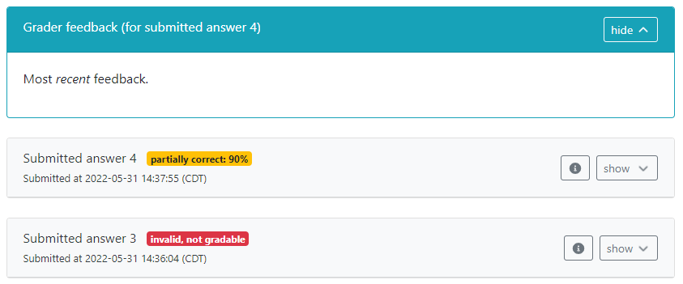

Thanks to the work of numerous contributors, the PrairieLearn development team is looking forward
to introducing improvements in the instructor's experience for manually-graded questions in the
coming months. As part of these improvements, manual grading feedback will be shown automatically
to students, when available. If you have been using manual grading feedback, then you can remove
references to {{{feedback.manual}}} from your questions to avoid showing this
feedback twice. More details are below.
One of the existing features of manual grading is the ability to provide open-ended feedback to
students, which allows students to understand their misconceptions and improve their learning
experience. This feedback is typically provided using
the grade upload feature, and so far required question creators to include it explicitly in the
question.html file.
Some upcoming features in manual grading will enable more detailed feedback options, which require changes in visual elements for the student's question view. In order to simplify some of these changes, the student's question page now shows manual grading feedback by default, in a separate panel, as shown below.

One caveat of the change above is that, if the question.html file continues to
include the feedback in the submission panel, then feedback will be shown to students twice, once
in the new panel, and once where it was shown before. To avoid this duplication, instructors are
strongly encouraged to remove any reference to the manual feedback text from their questions.
For most instructors using manual feedback, the question will include a reference to
{{{feedback.manual}}} somewhere in the question file. For reference, the manual
grading documentation used to have the following snippet as a suggestion. You are encouraged to
remove this snippet from your questions.
<pl-submission-panel>
{{#feedback.manual}}
<p>Feedback from course staff:</p>
<markdown>{{{feedback.manual}}}</markdown>
{{/feedback.manual}}
</pl-submission-panel>